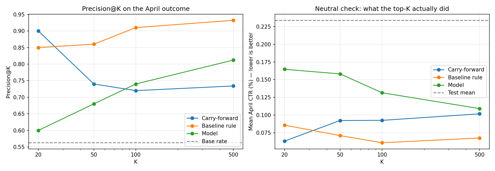
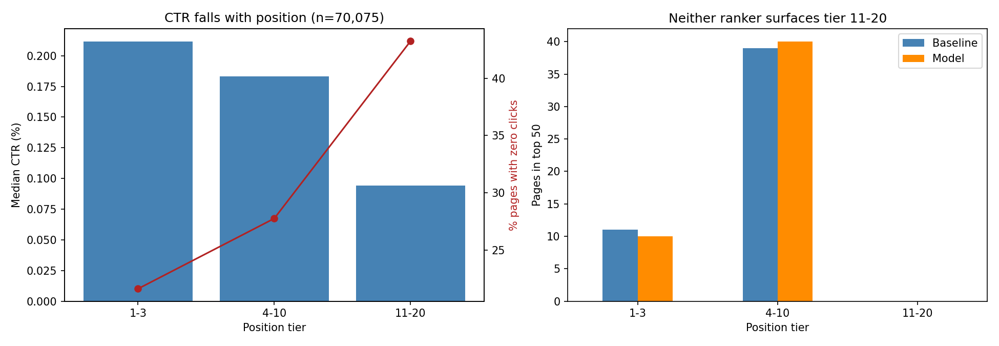

FlyRank ML Internship · Machine Learning track · Applied Search Intelligence
A position-adjusted opportunity score for search content review, built on 70,075 pages of pseudonymized search data — and the learned model that lost to it.
A content team can review perhaps fifty pages a week out of tens of thousands, and the obvious way to choose them — sort by click-through rate and take the worst — mostly returns pages that rank low in search rather than pages that underperform. I built a transparent rule that compares each page only against pages at a similar search position and scores it by estimated missed clicks, then trained a gradient-boosted model to predict expected clicks and rank pages by the residual instead. Both were validated the same way: features from March 2026, whole clients held out of training, and rankings scored against an outcome observed in April 2026 that neither could see. The rule reached precision@50 of 0.86 against the model's 0.68, and it also won on a second metric built specifically so it could not favour the rule by construction. The more useful finding is one both share: neither surfaces a single page from search positions 11–20, which is exactly where 43% of pages received no clicks at all.
Which visible pages are showing up in search but not getting as many clicks as they should?
Behind that question is a scheduling problem. A content team cannot review every page. Each week they can open a limited number — say fifty — and the decision is which fifty. A reviewer opens each page from the list, checks the title and meta description against what the page actually offers, and rewrites them if there is a clear mismatch.
The obvious answer is to sort by click-through rate and start at the bottom. That does not work, because position determines most of the click-through rate before content has any say in it.
Bars are median CTR relative to the top tier (0.211%, 0.183%, 0.094%). The right column is the share of pages that received zero clicks despite at least 100 impressions.
Click-through rate falls with position and the share of pages that got nothing at all climbs from 22% to 43%. So a list sorted by raw CTR is close to a list sorted by position. Comparing a page against pages at a similar position is meaningful; comparing it against the whole inventory is not.
A wrong call costs twice. A reviewer edits a page that was fine, and a page that needed attention stays broken for another week. Since reviewers only get through the top of the list, a wrong page near the top is expensive — which is why this work is measured by precision at the top of the ranking rather than by accuracy across all 70,075 pages.
The FlyRank internship warehouse release, build id flyrank_pseudonymized_warehouse_release_v20260703. It is gated, pseudonymized, and ships observable signals only — no client names, domains, URLs, or queries appear in it, or anywhere in this work.
Two tables: fact_content_daily_performance for daily search signals, and dim_content joined on content_hash_id for page metadata.
March 2026 for features, April 2026 for evaluation only. A mid-panel month, because the panel is unbalanced — clients begin tracking at different dates, so a middle month has more clients with real history than either end. June 2026 is the final month and the natural outcome window for any past-to-future label, so it stays sealed. That also rules out the _sample table, which is exactly June.
The daily table records one row per page per client per day. That is not the decision grain — a reviewer acts on a page, not a page-day — so the daily rows are aggregated to one row per client-page over the month. The collapse was verified rather than assumed: 9,841,378 daily rows and 9,841,378 distinct date-client-content keys, reducing to 331,437 client-pages. After filtering to pages with at least 100 impressions, an average position between 1 and 20, and a creation date before the window opened: 70,075 pages across 38 clients.
days_since_update fall after the window start, and one single value is shared by 12,734 pages. That reads as a bulk sync stamp rather than an edit history. Using it would have put future information into a rule that has to work at the decision moment.fact_content_query_90d is computed over a fixed 90-day window I do not control, and it overlaps any target window I define.For every page with enough exposure, compare its CTR against the median CTR of pages in its own position tier. If it sits below, estimate the clicks it plausibly missed:
estimated_missed_clicks = impressions × (tier_median_ctr − ctr) / 100, floored at zero.
Multiplying by impressions is deliberate. An earlier version ranked on the raw CTR gap and put all fifty top pages in a single tier, because an absolute difference from a tier median favours whichever tier has the highest median. Scoring in estimated clicks corrects that direction and puts the score in a unit a reviewer understands.
A gradient-boosted regressor with Poisson loss, predicting clicks from five knowable signals: impression-weighted average position, impressions, content age at the window start, content type, and main intent. Predicted clicks become an expected CTR, and pages are ranked by how far their actual CTR falls below it. Poisson rather than ordinary least squares because the target is a count and over a quarter of pages have exactly zero clicks.
Whole clients are held out, not random rows. One client holds a large share of the slice, so a random split would let the same client sit on both sides and let a model score well by learning that client's habits. The split leaves 25 clients and 37,478 pages for training, 12 clients and 18,447 pages for testing.
Rankings are built on March and scored against April: was the page still below its position tier's median CTR in the following month? Of March pages below their tier median, 74.7% were still below it in April, against a base rate of 51.6% — so this is a persistent property rather than month-to-month noise. April data enters the evaluation only. It is never a feature.
Every input is a measurement taken during the feature window: impressions summed over it, position impression-weighted over it, tier medians computed from the same pages in the same month. No FlyRank product flag is used — none ships in this release by design. An assertion in the notebook confirms no future-dated column reached the exported queue.
Three rankers, the same twelve held-out clients, the same observed April outcome. Carry-forward is the cheapest possible ranker — it simply flags whatever was below its tier median in March — and it is included to show what the comparison is worth.
| K | Carry-forward | Baseline rule | Model |
|---|---|---|---|
| 20 | 0.900 | 0.850 | 0.600 |
| 50 | 0.740 | 0.860 | 0.680 |
| 100 | 0.720 | 0.910 | 0.740 |
| 500 | 0.734 | 0.932 | 0.812 |
I expected that metric to favour the rule. The label asks whether a page was below its tier median in April; the rule scores how far below its tier median it was in March. Those are the same quantity a month apart. So I built a second metric that never touches a tier median — it asks only what click-through rate the top-ranked pages actually had in April.
| K | Carry-forward | Baseline rule | Model |
|---|---|---|---|
| 20 | 0.063 | 0.086 | 0.165 |
| 50 | 0.092 | 0.071 | 0.158 |
| 100 | 0.093 | 0.061 | 0.132 |
| 500 | 0.102 | 0.068 | 0.109 |
Spearman correlation with April CTR, where more negative means a better ranking: carry-forward −0.399, baseline −0.361, model −0.276.
The model lost on both metrics. Removing the rule's structural advantage did not change the outcome — on this slice, the transparent rule ranks better than the learned one.
The reason traces back to an earlier check. The model's job is to predict expected clicks from five features, and those features explained almost none of the variation in click-through rate — R² of 0.012 on a held-out split. A residual is only as good as the prediction it is measured against, so a weak predictor yields a noisy residual. Layering a model on top of a poor expectation made the ranking worse, not better.

It looks strongest at K=20, but its score is binary, so thousands of pages tie at 1 and its top twenty is an arbitrary slice of that tie group — which is why its numbers move between runs while the rule's do not. Its top twenty also contains 65% pages with zero April clicks, against 5% for the rule. It finds low-volume pages that underperform truly but trivially. A page with 200 impressions is not worth a reviewer's hour.
Tier 11–20 holds 18,149 pages in March and 43% of them received zero clicks — the worst outcomes in the slice. Neither the rule nor the model places a single one of them in the top fifty.
This is structural, not incidental. Both multiply a shortfall by impressions, and tier 11–20 is smaller on both terms: its median CTR is 0.094, so the largest shortfall a page there can have is 0.094 against 0.211 for the top tier, and its median impressions are 581 against 1,849. Two smaller numbers multiplied together mean deep-ranked pages essentially cannot outscore shallow ones, however badly they underperform their peers.
The model inherited the bias rather than fixing it, which locates the problem in the scoring shape rather than the choice of estimator. Two testable alternatives: score the shortfall as a fraction of the tier median so tiers compete evenly, or keep the click-based score and rank within tier rather than globally.

In March, exactly 3,611,061 rows have gsc_data_available IS TRUE and exactly 3,611,061 have impressions above zero. The counts are identical, so a page that was tracked and served nothing cannot be separated from a page that was never tracked. For the remaining 63% of daily rows, the reason for the absence is unknown.
The model's precision@50 came out at 0.680 and 0.720 across two runs of identical code with a fixed seed — about two pages in fifty. The rule's figures are identical across runs. The model's numbers should be read as approximate.
One month, one slice: 38 clients and 70,075 pages after filtering, with held-out evaluation on 12 clients. Nothing here has been tested at full warehouse scale or across seasons.
That editing a page causes clicks to change. This is observational data: impressions, clicks and position measured after the fact, never the ranking system, the results page, or the person doing the searching. Even a perfect ranking here is decision-support — pages worth a reviewer's time, in an order. It is not a causal claim, and it is not a statement about how any search engine ranks anything.
The playbook ships the rule, not the model. That is the honest consequence of the results — and the rule is also the one a reviewer can read and argue with.
Every row carries a score in estimated missed clicks, one reason code (below_tier_ctr), one action (review_title_and_meta), and a confidence label. Of the top hundred, 88 are high confidence and 12 are flagged for verification first.
A hand review of the top twenty found seven pages with near-zero CTR at very high exposure. One sat at position 1.4 with 44,707 impressions and no clicks at all. A page ranking that high with nothing to show for it is unlikely to have a title problem — a tracking gap or a results-page feature answering the query in place is a better explanation. Those pages no longer receive high confidence; they are marked for verification, because the ranking surfaces the largest gap and the largest gap is sometimes the most broken measurement rather than the most fixable page.
The query behind a page may simply not match what the page offers, which no metadata edit fixes. Pages already at positions 1–3 have a low ceiling even when a rewrite works. And the queue cannot see tier 11–20 at all.
Every notebook runs top to bottom from the repository, reading the warehouse over hf:// with DuckDB — no local download, no credentials in code. The two figures above are written by the capstone notebook, and the run's metrics are committed as JSON alongside them.
work/notebooks/w01_research_question.ipynb — lane choice and framingwork/notebooks/w02_ml_task_framing.ipynb — task type, target, metricwork/notebooks/w03_data_contract.ipynb — grain, windows, exclusions, the deliberate leakwork/notebooks/w04_baseline_score.ipynb — signal checks and the rulework/notebooks/capstone.ipynb — model, validation, resultsThe ranked queue itself is regenerated on every run rather than committed — the repository's leak guard keeps data files out of version control by design.